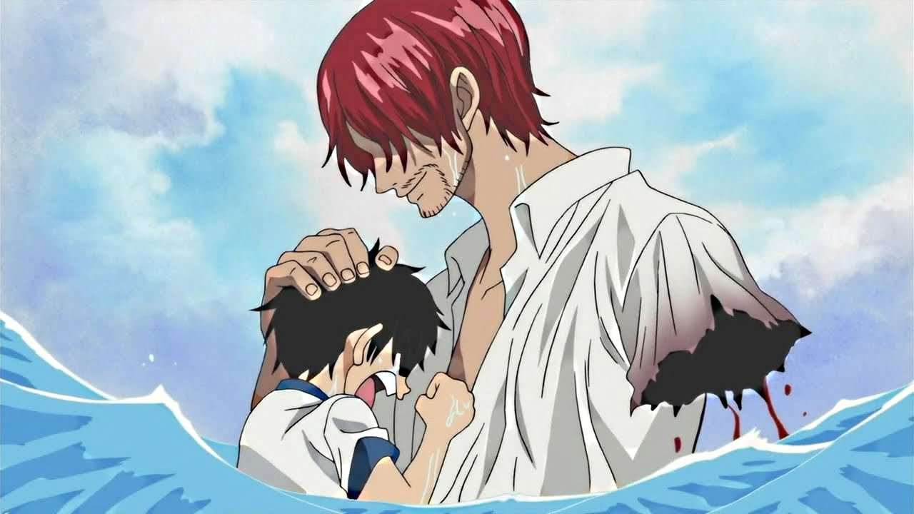
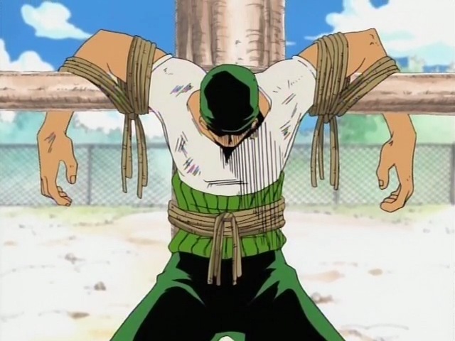
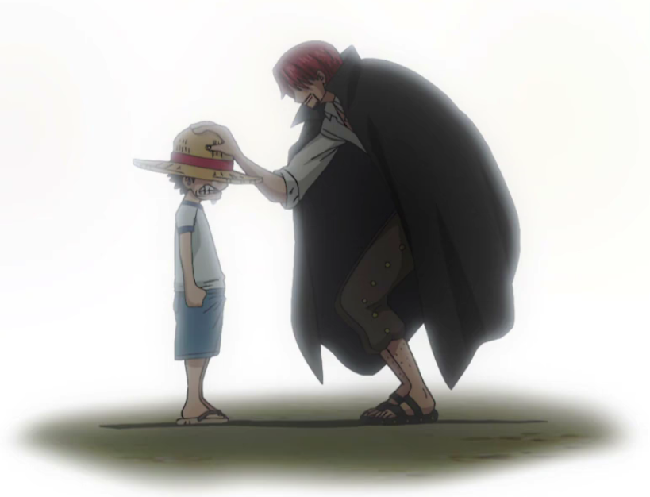

Romance Dawn Arc
One Piece Vua hải Tặc - Tổng hợp toàn bộ Arc của One Piece từ tập đầu tiên cho tới Arc Wano 2
Được Shanks truyền cảm hứng, Luffy quyết định sẽ khởi hành chuyến phiêu lưu nhắm đến mục đích trở
thành Vua Hải Tặc.Đầu cuộc hành trình, cậu gặp Coby - cậu nhóc nhút nhát nhưng muốn trở thành Hải
Quân. Họ cùng nhau vào thị trấn, gặp được Hải Quân Morgan Tay Rìu, con trai ông là Helmeppo và
Thợ săn tiền thưởng Roronoa Zoro.
Số chương: 7 (từ chương 1 đến chương 7)
Số tập: 3 (Từ tập 1 đến tập 3)
Số vol: 1 (Vol 1)
Diễn biến chính: Monkey D. Luffy muốn trở thành Vua Hải Tặc, Zoro gia nhập băng.


